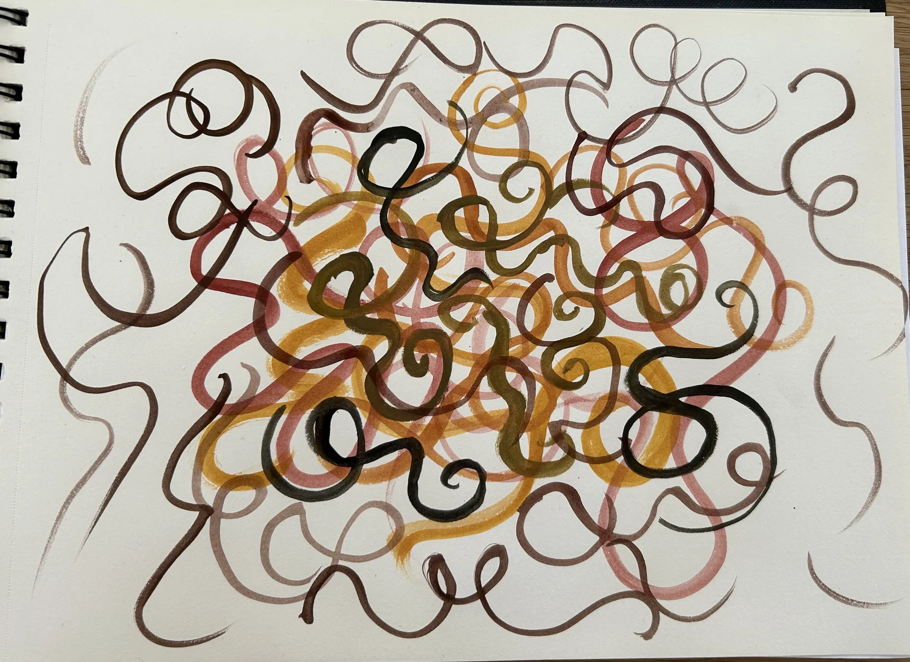

Művészetterápia
Mi a művészetterápia?
A művészetterápia egy olyan módszer, amely a művészetek és az alkotás erejét használja a lelki folyamatok támogatására.
A művészetterápia alapja az alkotáson keresztül történő kommunikáció. Az alkotás – legyen az rajz, festés, agyagozás, zene, mozgás vagy akár mese – lehetőséget ad arra, hogy kifejezzük azt is, amit szavakkal nehéz elmondani. Az így létrejövő képek, formák, mozdulatok segítenek közelebb kerülni önmagunkhoz, mélyebb megértéshez jutni, és új nézőpontokat felfedezni.
A művészetterápia dolgozik a tudatos és a tudattalan rétegekkel is. A csoportban megosztott reflexiók pedig segítenek még mélyebben rálátni saját élményeinkre, érzéseinkre.
Nem kell hozzá semmilyen művészi előképzettség, vagy tudás. Az alkotás egy eszköz, amin keresztül kifejeződhetnek az érzelmek.
Miben tud segíteni a művészetterápia?
- Kiváló feszültség és szorongás oldó, levezető
- Segít felszabadítani a bennünk levő – akár mélyen elraktározott – érzelmeket, legyen az düh, szomorúság, gyász, magány, félelem.
- Segít kifejezni olyan dolgokat, emlékeket, érzéseket is, amiket szavakkal nem tudunk
- Segít a traumafeldolgozásban
- Mélyíti önismeretünket
- A csoportban kapcsolódhatunk másokkal, ezért ha elmagányosodással, szociális nehézségekkel vagy szorongással küzdünk, egy biztonságos tér és zárt csoport gyógyító tud lenni
- Flow élményt élhetünk át, ami felszabadít, örömmel tölthet el
Hogy zajlik egy művészetterápiás csoport?
A művészetterápiás csoportban általában van egy alkotási folyamat, ahol egy adott témán belül alkotunk valamilyen művészetterápiás eszközzel. Majd ezt követi egy feldolgozás, reflektálás az alkotásra az alkotó, valamint a csoport részéről. Ahogy korábban szó volt róla, a művészeti foglalkozás a csoportban nem csak kreáció, hanem kommunikáció is. Az alkotó a saját művén keresztül jobban megértheti önmagát, de azzal, hogy a csoport tagjai is reflektálnak a műre, elindít egy beszélgetést, dialógust.
Kinek ajánlott?
Tulajdonképpen bárkinek. Felnőtteknek, gyerekeknek, kamaszoknak egyaránt. Gyakori félelem, hogy nem vagyunk tehetségesek, nem tudunk szépen rajzolni, nincs jó zenei hallásunk vagy ritmusérzékünk, de ezek mind nem számítanak. Nem kell hozzá semmilyen művészi érzék, tudás vagy előképzettség. A lényeg az alkotáson van, a kifejezésen, a kreatív folyamaton és mindazon lelki és tudati tartalmon, amivel szembesít minket.
Művészetterápia a gyakorlatban
Szorító mellkasi érzés alkotásban kifejezve (Nő, 22 éves)
Az alkotás során felszínre kerülhettek azok az érzelmek is, amelyek egy testi érzetben – mint a szorító mellkasi érzés – voltak jelen, és amelyeket szavakkal még nem lehetett kifejezni.